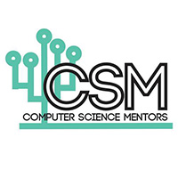
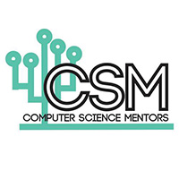
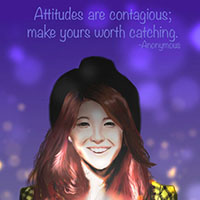
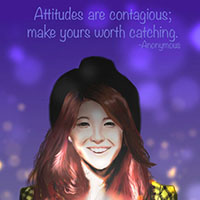
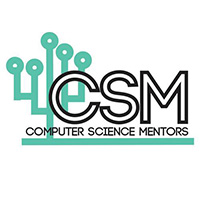
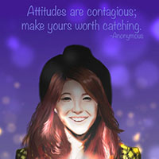

Involvements
 

 

Welcome to my page!
I am at a third year at UC Berkeley majoring in Business Administration at the Haas School of Business, minoring in Applied Language Studies, and hold strong interests in Computer Science as well.
I am pursuing a career in product management as well as in human resources and recruiting.
I have discovered over the past couple of years through my many involvements on campus that I am passionate in two things: helping others, and making an impact;
It's a little cliche, but it's a statement I live by every day. As a workaholic, I fill up my day with countless involvements to ensure I am maximizing my learning and experience received in every given circumstance. I typically take heavy course loads in addition to my various extracurricular activities and pursuits as an undergraduate, while still maintaining important relationships despite my active lifestyle.

